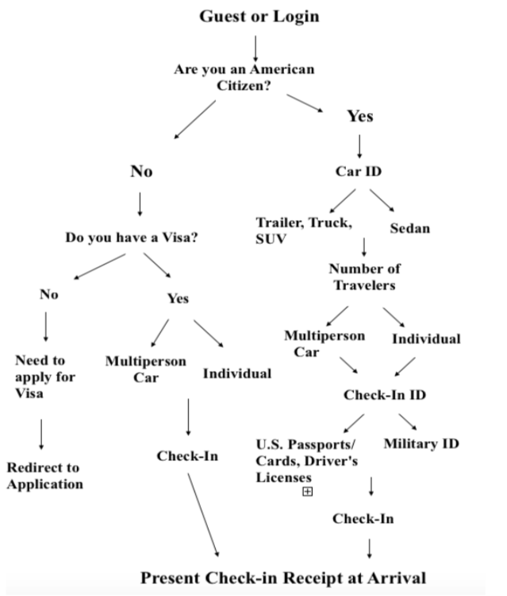
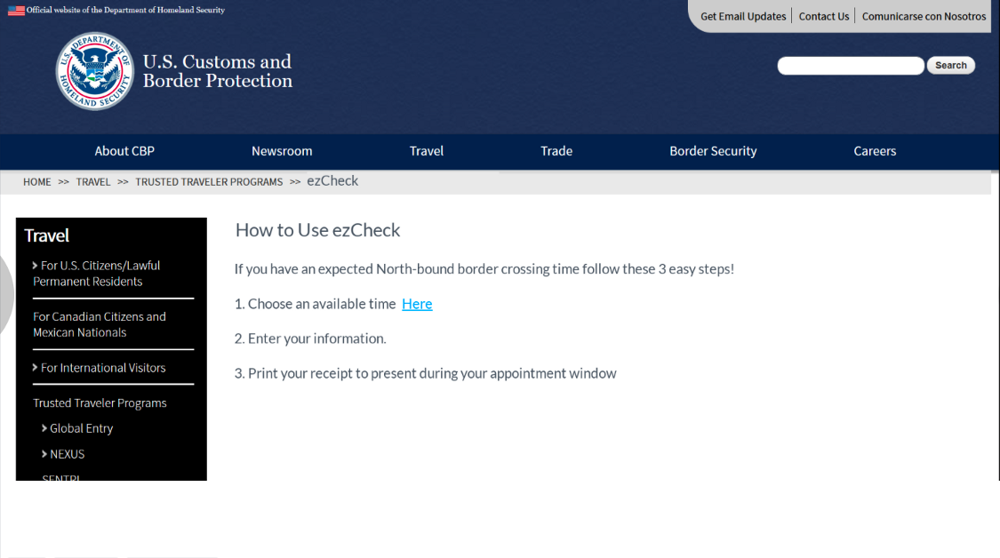
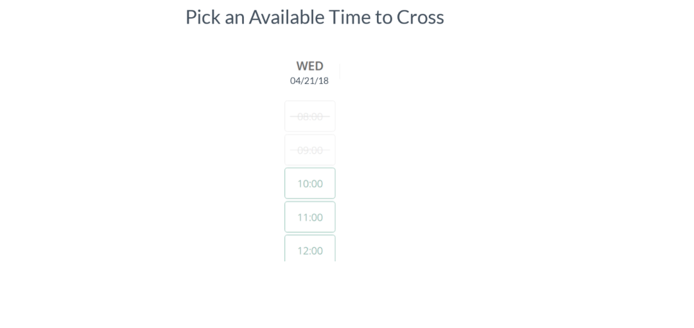
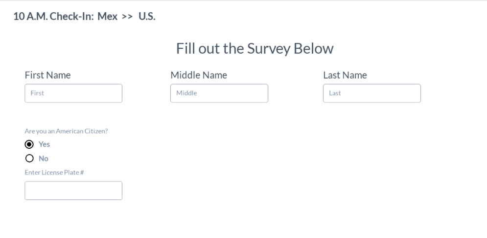
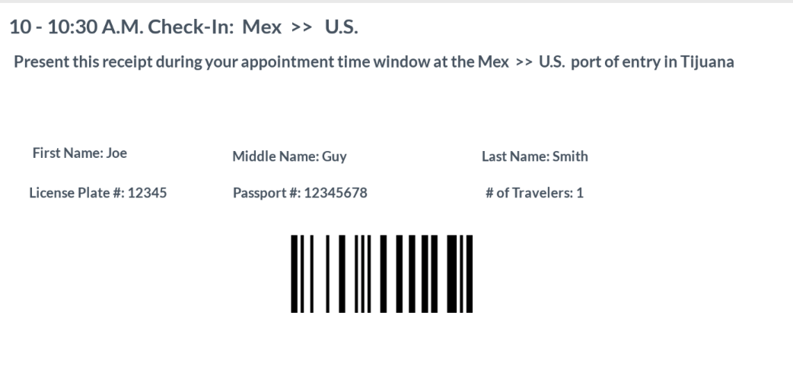

The Problem
San Ysidro is currently the biggest port of entry in the United States with individuals spending hours at peak time attempting to cross the US/Mexico border. Idling cars at the border produce high amounts of border-generated air pollution and are tied to health issues in low income communities as well environmental degradation. These long lines are also a problem for the millions of people who each year cross the border to:
- Access cheaper medical or dental care
- Access cheaper day to day products
- Access significantly cheaper housing
- Attend school or go to work
- Vacation or visit family on either side of the border
As part of a social innovation challenge team, I was asked to redesign the experience for commuters passing through San Ysidro. The challenge was to create a more efficient experience on both the side of the driver and customs.
Expert Interviews
There are already two established forms of passes that allow users to significantly drop their idling time at the border. These programs, although have room for success, draw commuters away because of their high cost, background check requirements, or lengthy application cycle. The lines most commuters chose to go through are long because of simply the large volumes of people crossing the border and the need for each car to be processed individually.
Secondary Research
- Commuter Students Cross the U.S. Mexico Border
- Commuter Students Cross the U.S. Mexico Border
- Is Tijuana a Viable Housing Alternative for San Diegans?
- Border Patrol Changes Rules at Friendship Park, Upsetting Frequent Visitors
Ideation Phase
We began by emphasizing with the commuter by understanding the main issue with the border crossing experience: the length of time it takes to make it from the initial point to the destination. In order to identify the ideal solution we began by thinking of ideas and placing every concept onto a sticky note.

After establishing the limitations of easing the commuting experience for every individual, we settled on allowing for a limited pool of users. These users would be individuals who are U.S. citizens or hold visas to enter the country. To narrow down the pool of users even more we established that users would be required to check-in at least 24 hours before their arrival at the port, cancelling out any last minute travelers.
User Flow
After understanding the experience we wanted to create for the commuter, we began to draw out a user flow of the online appointment system. It was important to consider the limitations already in place and establish a criteria commuters would have to meet in order to be considered eligible. Without presenting this information at the start of the appointment scheduling process, it would be easy for the commuter to get confused about the proper use of the system. Simple quesitons at the start of the process were vital to establish consistency on the type of commuter the program would accept.
Final Solution
The final product was a check-in system that allowed commuters to reserve their spot in a designated line and simply arrive at that time to reduce idling. The amount of people that could reserve would be limited by the amount of traffic at any given time. This is a simple solution that allowed sporadic commuters to be able to skip the wait and access an alternative otherwise only granted to paying, consistent commuters.
   After the intial expert interviews, I had to make assumptions about the way to best create the commuter experience. Throughout the experience it was important to step back and consider the bigger picture to understand the user journey. The San Ysidro Chamber of Commerce responded with positive feedback about our plan and were excited about the prospect of utilizing it in the future.